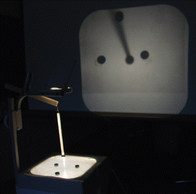

| Here is a general description of the problem,
togeher with an initial position map: |
| Because the magnets do not lie along a line, the initial position of the
pendulum occupies two coordinates. |
| So instead of the phase plane,
here points represent only the initial position of the pendulum. For this
experiment, we start the pendulum from rest. |
| Here is a more detailed description of the experimental set-up. |
|
| Make sure the pendulum and the stationary magnets are arranged so they
attract one another. |
| Place the stationary magnets on the overhead projector surface and
attach the pendulum to the projector head. Turn on the projector. Depending on
where the pendulum is released, it can undergo complicated motion before
settling over one of the magnets. |
|  |
| Projected image of the pendulum and stationary magnets |
|